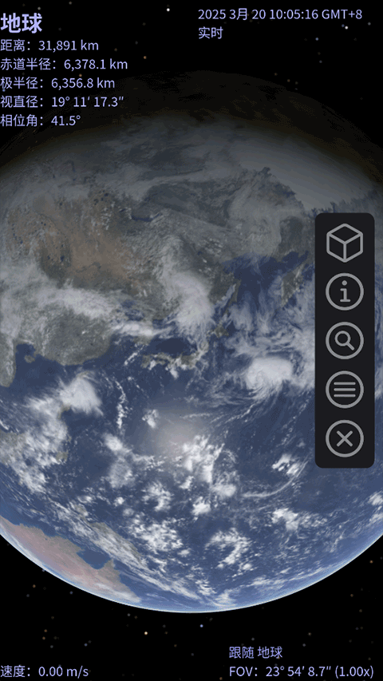
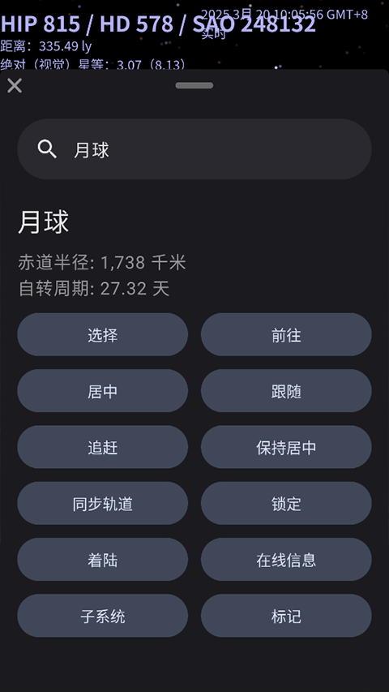

Celestia 到底值不值得掏钱？一份天文软件付费决策账本
Celestia 本体免费开源，但要不要为它升级显卡、学脚本、或者干脆转投付费天文软件？这篇按轻度、主力、重度三档用户算账，给你一个可执行的判断。
开头：一个反直觉的问题
写付费决策账本，通常开头是"这软件卖多少钱"。但 Celestia 不一样——去Celestia官网看一眼就明白，它的核心本体不要钱，从源码到安装包到 12 万颗恒星的 Hipparcos 目录全部开源。你可能会说，免费的东西还需要算账？
需要。因为免费只是入场券，深度使用的成本从来不是软件 license，而是硬件、时间、以及机会成本。你可以花零元装完打开看一眼月亮，也可以花几千块升级显卡只为了让地球贴图从 2K 变 8K，还可以花几周啃完 Lua 脚本文档自己写一个天体轨道模拟器。这些决策哪个值，哪个不值，从来没人给过一张清晰的账。
我用 Celestia 大概两年了。从第一次在浏览器里打开 celestia.mobi/web 看到地球悬在太空里的那个瞬间，到最近在课堂上用投影演示土星环倾角变化——前前后后踩过不少坑，也替身边三个朋友做过"要不要装"的决策。下面这笔账，是我自己用出来的，也是替那三个朋友算出来的。
定价拆解：免费到底给了什么，没给什么
Celestia 的"定价体系"其实很鸡贼——它把所有核心功能都免费，把差异化留给了社区生态和硬件天花板。先说免费版给了什么：
- 完整的 Hipparcos 目录：12 万颗亮星，位置精度在毫角秒级，太阳系八大行星、所有已命名卫星、矮行星、主要小行星带天体全部就位
- 基础渲染：大气散射、土星环、月球正面地形、太阳光晕这些"看起来像样"的效果开箱即用
- 所有核心操作：缩放、旋转、飞行路径预设、时间加速/减速，快捷键一套 20 个够用
- Lua + CELX 脚本引擎：这玩意儿是 Celestia 真正的核武器，但官方文档藏得比较深，新手默认看不到入口
免费版没给的——准确说是"没有但可以自己装的"：
- Motherlode 添加件：celestiamotherlode.net 上有 10GB+ 的社区内容，从 8K 地球贴图到 Star Trek 企业号 3D 模型全在这里。全部免费，但需要自己下载手动安装
- HDR 渲染和次表面散射：这些是付费天文软件才有的高级效果，Celestia 本身不支持，也没有第三方添加件能补上
- 移动端离线版：Android/iOS 上的 celestiamobile 团队有独立的前端，但离线需要付费（Quest VR 版 $9.99）
所以 Celestia 的"付费决策"本质上是三层：要不要花时间装社区添加件、要不要花硬件钱配得上 8K 贴图、要不要干脆转投功能更全的付费天文软件。
算账：三档用户的真实成本
我把 Celestia 用户分成三档，每档的成本结构完全不同，分开算才不混。
轻度用户："偶尔打开看看星空"
画像：天文爱好者入门，偶尔想知道今晚火星在哪个方向，或者给孩子看土星环长什么样。使用频率——一周一次，每次 10 分钟。
免费版够不够？够，完全够。 甚至不需要装桌面版，浏览器打开就行。celestia.mobi/web 版虽然渲染质量比桌面版差一点，但 12 万颗星都在，搜索功能正常，教室投影也能直接用。
成本账：零元。时间成本 = 首次下载安装 5 分钟 + 学习基本操作 10 分钟。以后每次用就是打开 → 搜索 → 看 → 关。
有没有替代品？ Stellarium 免费版、SkyView 手机应用都是竞品。Stellarium 的优势是星座连线更友好、默认界面就是星图模式，缺点是没有 Celestia 的"自由飞行感"——你在 Stellarium 里是站在地球上看天空，在 Celestia 里是跳出大气层看整个太阳系。SkyView 手机端体验好，但没有桌面端的精度。
结论：轻度用户永远不用为 Celestia 掏一分钱。 甚至不需要特意装——把 Web 版收藏到浏览器书签就行。如果发现自己用得越来越多，再升级桌面版不迟。
主力用户："教学、演示、日常查天体"
画像：中学地理/天文老师、科普博主、望远镜持有者需要查天体位置的场景。使用频率——每天或隔天，每次 20~60 分钟。
免费版够不够？基础够用，但有两个明确的升级点值得花钱或花时间。
第一个升级点是贴图替换。Celestia 默认地球贴图是 2048×1024，月亮更粗糙。Motherlode 上有 8192×4096 的地球贴图和匹配的法线贴图，装上之后从太空飞近地球能看到云层纹理和地形起伏。但 8K 贴图对显卡有要求——核显能加载但会自动缩小到 2K，需要一张 GTX 1060 级以上的独显才能全分辨率渲染。一张二手 GTX 1060 大概 800 元。
第二个升级点是天体标签配置。默认 Celestia 不开标签，打开后每颗行星、卫星、亮星旁边都有名字。教学场景下这是刚需——学生抬头就能认"这是木星、那是土星的卫星 Titan"。这个不需要花钱，但需要花 15 分钟在渲染菜单里把 Planet、Moon、Star、Constellation 四个标签勾上，关掉 AutoMag 手动限制星等上限（不然会出现几千个标签淹没画面）。

成本账：不升级显卡 → 零元 + 15 分钟标签配置；升级显卡 → 800 元二手 GTX 1060 + 10 分钟装贴图 + 重启验证效果。
替代品：Stellarium Pro（$25 买断）、Star Walk 2（$4.99 移动端）。 Stellarium Pro 的优势是天文计算更精确（日食月食模拟、流星雨预报），但没有自由飞行模式，也没有 Motherlode 级别的社区添加件生态。Star Walk 2 移动端体验碾压，但做教学演示还是桌面端更方便。
结论：主力用户大概率不需要为软件付费，但有两档升级值得考虑——显卡预算 800 块以上的可以换一张独显体验 8K 贴图；教学场景必须花 15 分钟把标签配置好，否则 Celestia 作为教学工具的价值砍掉一半。 如果你的需求只是"查天体位置 + 偶尔演示"，Celestia 免费版比 Stellarium 免费版体验更好，因为自由飞行模式带来的沉浸感是 Stellarium 做不到的。
重度用户："天文可视化、脚本开发、添加件创作"
画像：天文科普视频创作者、Celestia 添加件开发者、用 CELX 脚本做天体轨道模拟的研究者。使用频率——每天数小时，需要精确渲染和自动化能力。
免费版够不够？核心功能够，但有三个痛点是免费版解决不了的，需要硬件 + 时间双重投入。
第一个痛点是渲染精度上限。Celestia 不支持 HDR（高动态范围）、不支持次表面散射、不支持体积云——这些在 Blender、Unreal Engine 里是基础功能，在专业天文可视化软件里是标配。如果你要做 4K 分辨率的科普视频片头，Celestia 的渲染质量天花板就在那里，只能靠后期软件补救。
第二个痛点是脚本引擎的学习曲线。CELX 是 Lua 的一个方言，语法和 Lua 几乎一样，但 Celestia 的 API 文档比较分散——建议先系统过一遍Celestia中文文档，能省不少时间；官方 wiki、论坛旧帖子和示例脚本的注释里也有碎片内容可以挖。从零开始学到能写一个"模拟彗星 1997 年飞掠木星"的脚本，大概需要 20~30 小时。这个时间成本折算成钱的话，按你的时薪算一算就知道值不值。
第三个痛点是Motherlode 添加件的质量参差不齐。虽然总量 10GB+，但很多是十几年前停更的旧版本，和当前 Celestia 1.6.x 的 API 不兼容。需要自己测试、筛选、甚至改 .ssc 数据文件才能用。

成本账：按重度用户的典型配置——i7-12700 + RTX 4070（约 12000 元整机预算里分给显卡 4000） + 花 20 小时学 CELX（折算成钱 = 你的时薪 × 20）。另外 Motherlode 上有一个付费的"专业添加件包"（$19.99），包含精确到米级的 ISS 轨道模型和实时位置数据，对科普视频创作者有用。
替代品：Celestia 专业版路线不存在——Celestia 只有开源版。真正的替代品是 Blender + NASA 开放数据，或者 SkySafari Pro（$19.99 买断，iOS/macOS 平台，天文计算精度拉满但没有自由飞行）。
结论：重度用户的决策核心是"Celestia 的自由飞行 + 社区生态"能不能覆盖你的需求。 如果你需要沉浸式的天体飞行演示 + Motherlode 里的虚构宇宙添加件（Star Trek 企业号飞过真实太阳系这种），那花 4000 块升级显卡 + 20 小时学脚本是值得的——这套组合目前没有替代品。但如果你主要做精确天文计算或专业可视化渲染，应该直接跳过 Celestia 用 Blender + 专业数据集，Celestia 的渲染精度在那里是硬伤。
替代方案：不付这笔钱的三条路
算账不能只看"花多少"，还要看"不花的话损失什么"。
路线一：降级硬件，继续用免费版。 好处是零成本。坏处是 8K 贴图自动缩小、HDR 渲染不支持、大缩放时可能卡顿——对于主力用户来说这些问题不致命，轻度用户完全感受不到。
路线二：换 Stellarium 免费版。 好处是星座地图更友好、日食月食模拟精确。坏处是没有自由飞行、没有 Motherlode 添加件生态、没有虚构宇宙内容——从"宇宙飞行模拟器"退化成"星空望远镜"。
路线三：等 Web 版进化。 celestiamobile 团队在持续优化 WebGL 渲染，未来可能支持更高分辨率贴图和脚本功能。如果你的使用场景是"偶尔演示"，Web 版已经够用，持续关注就行，不需要急着配硬件。
最终结论：三秒对号入座
- 闭眼付（或花时间）：主力用户中的教学场景 → 花 15 分钟配标签，显卡预算够的话升级一张独显；重度用户中需要自由飞行 + 社区添加件的 → 花 4000 块显卡 + 20 小时学脚本。这两类人付费的核心原因是Celestia 的生态和体验目前没有替代品。
- 再等等：主力用户中的"查天体位置 + 偶尔演示" → 免费版完全够用，先用着，等 Web 版渲染质量上来再决定要不要装桌面版。重度用户中主要做精确计算的 → 直接跳过 Celestia，用专业工具更高效。
- 永远不用付：轻度用户 → 浏览器 Web 版收藏到书签，这辈子不需要为 Celestia 花一分钱。Celestia 免费版的功能密度已经覆盖了 99% 的轻度使用场景，付费只会增加负担。
最后说一句我自己的体验：Celestia 最值钱的从来不是软件本身，而是打开它那一刻——跳出地球引力、从太空里看自己住的这颗蓝色星球的那种感觉。 这种感觉是免费的，也是无法定价的。至于硬件和时间，那是为了让这种感觉更清晰、更可控、能分享给更多人。值不值，取决于你想把这份感觉带到多远的地方。
这套资料在三个仓库都能拿到：GitHub上的主仓库、Gitee上的国内镜像（访问速度更快）、以及GitCode上的备份副本，方便不同环境下的开发者和爱好者查阅。